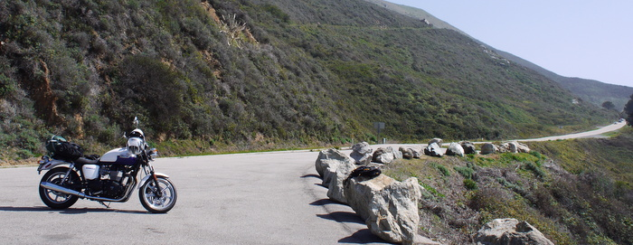
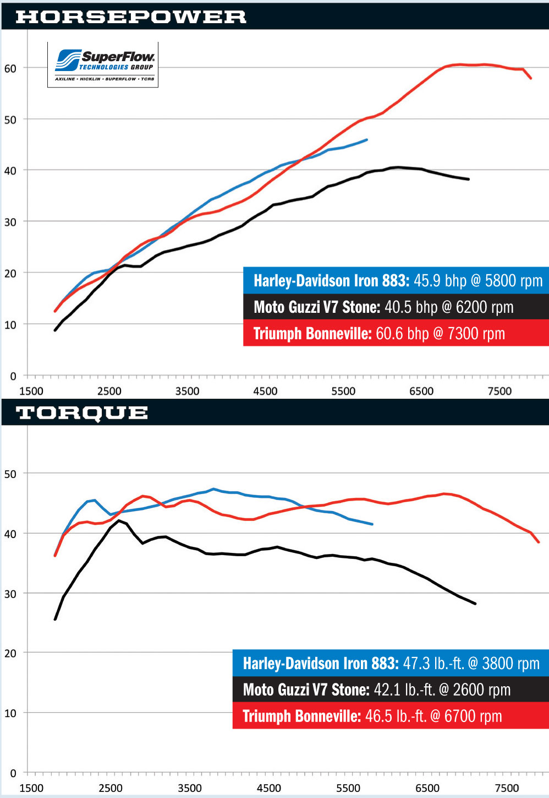

Daily Commuting on Bonneville
2020-04-04: 글이 누락되어 있어 추가하였습니다.

본네빌을 3월 초에 샀으니 한달 조금 넘겼습니다. 한달 반동안 1550마일, 2500km 정도 달렸네요. 그 중 거의 대부분을 통근용으로 탔으니 통근에 대한 이야기를 할 수 있는 경험이 조금은 있다고 할까요..? 사실 출퇴근이 왕복 30마일(50킬로) 정도로 짧지는 않은 편이고 저녁 약속이라도 있어서 코리아타운에라도 가면 그 이상은 훌쩍 넘기에 한달 반 동안 통근으로만 거의 1400킬로정도는 탔던 것 같네요.
처음에는 출퇴근을 바이크로 하는게 걱정이 좀 되긴 했습니다. 그나마 한국보다 매우 한가한 실리콘벨리지만 출퇴근 때 만큼은 꽤 많은 차량이 도로로 쏟아져 나오기에 그 사이에 끼어서 바이크를 몰고 가면 무슨 험한 꼴을 당하지 않을까 걱정되기도 했었네요.
그러나 그건 괜한 걱정이었습니다. 대부분의 운전자가 바이크를 하나의 차량으로 인지하고 차선을 잡고 가도 불만 품지 않고 그냥 평소와 다름없이 운전합니다. 비록 차선 사이 운행이 합법이라 하지만 차량이 움직일 때는 차선을 지키며 가고 신호로 정지해 있을 때에만 차선 사이로 지나가 신호등 앞 정지선으로 움직이는데, 차량이 정지해 있는데 바이크가 뒤에서 오는 소리를 들으면 약간이라도 공간을 만들어주기위해 움직여 주는 운전자가 많아서 놀랍기도 합니다.
캘리포니아는 카풀 레인 (Carpool Lane)이란 것이 있는데, 한국으로 치면 버스 전용차로와 비슷합니다. 고속도로나 4차선 이상인 도로에 카풀 레인이 있는데 이 곳으로 출퇴근 시간에 버스와 2인(!)이상 탑승한 차량, 그리고 바이크가 통행할 수 있습니다. 바이크는 탑승 인원 제한 없고 운전자만 타고있어도 통행이 가능합니다. 이로 인해 같은 길을 차량으로 이동할 때 보다 양심에 거리낌 없이(?) 출퇴근 시간이 대폭 단축이 됩니다. 로컬 도로를 이용 시 차량으로는 40분 정도 걸리는 거리가 바이크로 이동 시 30분 정도 소요됩니다. 장비를 착용하는데 걸리는 시간등을 감안하면 시간상 이득은 거의 없지만 출퇴근이 재밌어져서 집에가면 어서 회사에 가고 싶은 마음이 간혹(?) 듭니다. 반대급부로 회사에서는 밖에 나가서 바이크를 타고싶은 마음에 몸이 근질근질해서 집중이 안되기도 합니다. ㅎㅎ
1000마일정도 탄 이후부터 출퇴근으로만 썼던 때의 바이크 연비는 대략 44~45 mpg (19 km/l)으로 연비는 뭐 생각했던 것과 비슷한 수준입니다. 배기량이 865cc 이니 연비는 큰 기대는 하지도 않았습니다. 다만 최근 들어 출퇴근시 고속도로를 이용하고 있는데 연비가 50 mpg (21.2 km/l)까지 나와주네요. 타고다니는 차가 혼다 오디세이로 출퇴근 연비가 19 mpg (8 km/l) 였던걸 생각하면 감지덕지입니다. Fuelly 의 본네빌 페이지를 보면 연비가 낮게는 30mpg 초반에서 50mpg 중반까지 있는데 대략 평균이 40중반 또는 초반이니 저와 비슷한 것 처럼 보입니다. 스펙상 연비인 51 mpg을 만들려면 정말 참을 인을 마음속에 새기며 타면 가능할 것 같기도 합니다.
바이크 자체는 통근에 더할 나위 없이 좋습니다. 작고, 상대적으로 가볍고, 8000 rpm까지 꾸준한 토크밴드 덕분에 기어 변속에 대한 스트레스 없이 시내 주행을 편하게 할 수 있습니다. (아래 그림 참조) 그러나 할리데이비슨 아이언 883이나 본네빌이나 시내 주행에 관련된 저rpm 영역을 보면 그나물에 그밥입니다 (모토구찌 낮은거야 이미 알려진 ;;>. 본네빌의 진짜 성능을 보려면 고rpm 주행에 고속 주행을 해야 하는데 (아무래도 데이토나 엔진 그대로니), 그러면 “주행풍”이라는 문제에 부딫힙니다. 이쪽 실리콘 벨리에는 고속도로가 워낙에 많아서 고속도로 주행을 기본으로 하게 되는데 65마일 (105 km/h) 속도 제한에 대부분이 75 m/h (120km/h)로 달립니다. 이 속도를 맞춰 가다보면 내가 바이크를 타고 있는건지 페어글라이딩을 하는건지 뭔지 헷갈려오기 시작합니다. 앞에 카울이 하나도 없다보니 바람을 그대로 맞고 달려서 처음엔 안그래도 무거운 머리에 헬멧까지 쓰고 바람을 이겨내느라 목이 아프더군요. 요새는 근육이 좀 붙었는지 버텨내긴 합니다만..

총평을 내리면, 출퇴근과 간간히 가벼운 투어를 다니는 데에 이만한 바이크는 없는 것 같습니다. 그 이유는 첫째로 바이크가 이쁘고, 둘째로 바이크가 이쁘고, 마지막으로 바이크가 이쁘기 때문입니다(?). 앞으로 마일리지가 늘어나는데로 꾸준히 업데이트 하겠습니다.